Zerologon
- Lab: Zerologon trên CyberDefenders. Nhóm Endpoint Forensics, độ khó Hard, đã retired.
- Dữ liệu: bộ thu thập KAPE của 4 máy trong domain
elitesystems.local:DC01,FileServer,FIN-PC,IT-PC. - Event log: Sysmon Operational, Security, System.
- NTFS:
$Extend\$J(USN Journal). - Thư mục người dùng (
Users\...\AppData\Local\Temp). - Công cụ trong VM của lab: PowerShell
Get-WinEvent(lọc XPath ngay trên file EVTX) vàMFTECmd(Zimmerman Tools) để đọc USN Journal. - Quy ước:
- Giờ trong log là UTC. Bài ghi dạng
UTC (UTC+7). - Khung đỏ trên ảnh là chỗ cần chú ý.
- Vùng làm mờ là giá trị trùng với đáp án của câu hỏi trong lab.
Tóm tắt kết quả
FIN-PC(useresmith) chạy fileeasygoing.exetrong thư mục Temp. File này kết nối ra một IP bên ngoài qua TCP/80 và sinh ra các tiến trình con thực hiện recon, PowerShell mã hóa Base64 và tải script từ một listener cục bộ.- Trên
DC01, mật khẩu tài khoản máyDC01$bị đổi bởiANONYMOUS LOGONlúc 20:15:38 UTC (03:15:38 UTC+7 ngày 03/01/2024). Đây là dấu hiệu đặc trưng khi khai thác CVE-2020-1472 (Zerologon). - Sau thời điểm đó, tài khoản domain
dleeđăng nhập vàoDC01từ chính IP màeasygoing.exekết nối tới. Tài khoản này chạy lệnh qua WMI để tắt Microsoft Defender và mở RDP. - Kẻ tấn công cài service tên ngẫu nhiên qua share
ADMIN$trên cả 4 máy. Sau đó có các hành vi: - truy cập bộ nhớ
lsass.exe; - leo quyền qua named pipe;
- dùng thông tin đăng nhập của tài khoản
FileShareServiceđể chạy lệnh từ xa; - tạo scheduled task để duy trì truy cập (persistence);
- cài phần mềm điều khiển từ xa trên
FileServer. - Cuối chuỗi, script
localdisk.ps1chạy trên cả 4 máy. Script nén từng thư mục người dùng thành file zip trongC:\Data. - Chưa đủ dữ liệu để kết luận dữ liệu đã bị đưa ra ngoài (exfiltration).
Chuẩn bị truy vấn
- Mở PowerShell trong VM, trỏ biến
$Atới thư mục artifact. - Hai hàm dưới đây đọc trực tiếp file EVTX của từng máy và chuyển mỗi sự kiện thành object có tên trường (UtcTime, Image, CommandLine...).
- VM phân tích không cài Sysmon, nên trường
Messagebị trống. Phải lọc bằng XPath trênEventDatathay vì tìm chữ trong Message.
$A = "$home\desktop\start here\artifacts"
function ev($h,$log,$xp,$max=20000){ Get-WinEvent -Path "$A\$h\Windows\System32\winevt\logs\$log.evtx" -FilterXPath $xp -MaxEvents $max -ea 0 }
function sx($e){ $x=[xml]$e.ToXml(); $o=[ordered]@{UtcTime=$e.TimeCreated.ToUniversalTime().ToString('yyyy-MM-dd HH:mm:ss');Computer=$e.MachineName}
$x.Event.EventData.Data | ?{$_.Name} | %{ $o[$_.Name]=$_.'#text' }; [pscustomobject]$o }
# sq <máy> <loại sự kiện Sysmon> <tên trường> <giá trị> [số bản ghi]
function sq($h,$id,$f,$v,$n=5){ ev $h 'Microsoft-Windows-Sysmon%4Operational' "*[System[EventID=$id]] and *[EventData[Data[@Name='$f']='$v']]" $n | %{ sx $_ } }
- Trong các lệnh bên dưới, tham số thứ hai của
sqlà loại sự kiện Sysmon:1là tạo tiến trình (process creation),3là kết nối mạng,10là truy cập tiến trình khác (process access),11là tạo file.
Bước 1: tìm tiến trình lạ trên FIN-PC
- Mục tiêu: tìm tiến trình chạy từ thư mục người dùng, không phải từ
Program FileshaySystem32. - Cách làm:
- Liệt kê sự kiện Sysmon tạo tiến trình trên cả 4 máy.
- Bỏ các tiến trình hệ thống quen thuộc (svchost, Defender, VMware Tools, Edge Update...).
- Gom theo tiến trình cha (ParentImage).
- Kết quả:
C:\Users\esmith\AppData\Local\Temp\easygoing.exelà tiến trình cha của nhiều lệnh cmd, PowerShell và một binary hệ thống.
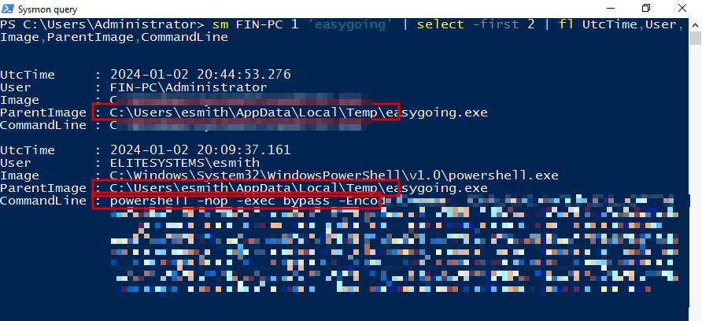
- Nhận định:
- Một file thực thi trong
AppData\Local\Tempsinh ra PowerShell với-nop -exec bypass -EncodedCommandlà hành vi bất thường. - Cùng một tiến trình cha chạy được bằng hai tài khoản khác nhau (
esmithrồiFIN-PC\Administrator). Điều này cho thấy quyền đã thay đổi trong khoảng 20:09 đến 20:44 UTC.
Bước 2: xác định máy chủ điều khiển (C2)
- Mục tiêu: xem
easygoing.exekết nối đi đâu. - Cách làm: lọc sự kiện Sysmon kết nối mạng có
Imageđúng bằng đường dẫn củaeasygoing.exe.
sq FIN-PC 3 Image C:\Users\esmith\AppData\Local\Temp\easygoing.exe 2 | fl UtcTime,User,Image,Protocol,SourceIp,DestinationIp,DestinationPort
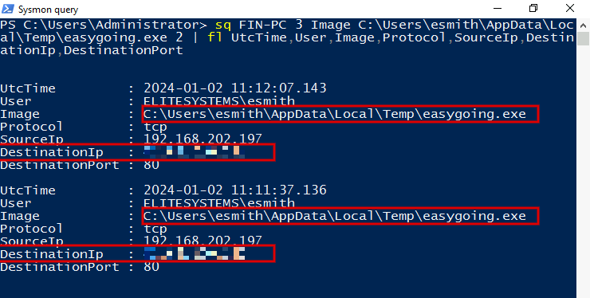
- Nhận định:
- Đích là một IP public, giao thức TCP, cổng 80. IP này xuất hiện lại ở Bước 5 (đăng nhập vào DC01), nên có thể coi là hạ tầng của kẻ tấn công.
- Giờ kết nối (11:11 UTC) sớm hơn giờ các tiến trình con (từ 19:44 UTC). Log có sẵn chưa giải thích được khoảng chênh này.
Bước 3: giải mã PowerShell và recon Active Directory
- Mục tiêu: đọc nội dung các lệnh PowerShell mã hóa do
easygoing.exechạy. - Cách làm: lấy tham số cuối của CommandLine rồi giải mã Base64 theo UTF-16LE.
sq FIN-PC 1 ParentImage C:\Users\esmith\AppData\Local\Temp\easygoing.exe 60 | ?{$_.CommandLine -match 'EncodedCommand'} | sort UtcTime |
%{ '{0} {1}' -f $_.UtcTime, [Text.Encoding]::Unicode.GetString([Convert]::FromBase64String(($_.CommandLine -split ' ')[-1])) }
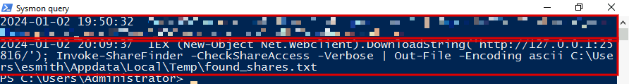
- Nhận định:
- Lệnh thứ nhất dùng module Active Directory để liệt kê toàn bộ computer object trong domain và xuất ra file CSV.
- Lệnh thứ hai tải script qua một listener trên
127.0.0.1rồi gọiInvoke-ShareFinder(một hàm của PowerView) để dò share có quyền truy cập. Cách nạp script qua cổng cục bộ thường gặp ở các framework C2 có chức năng PowerShell import. - Hướng giải: câu hỏi về lệnh recon nằm ở dòng đã làm mờ.
Bước 4: dấu hiệu khai thác Zerologon trên DC01
- Mục tiêu: kiểm tra tài khoản máy của Domain Controller có bị đổi mật khẩu bất thường không.
- Cách làm: đọc Security log của
DC01, lọc sự kiện thay đổi tài khoản máy (computer account changed).
ev DC01 Security '*[System[EventID=4742]]' 20 | %{ sx $_ } | ft UtcTime,SubjectUserName,TargetUserName,PasswordLastSet,IpAddress -wrap
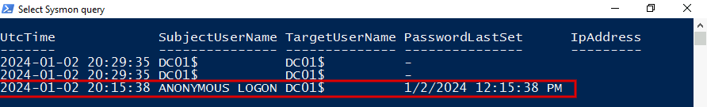
- Nhận định:
- Bình thường, tài khoản máy tự đổi mật khẩu bằng chính nó (Subject là
DC01$), như hai dòng lúc 20:29:35 UTC. - Mật khẩu được đặt bởi
ANONYMOUS LOGONkhớp với kỹ thuật Zerologon: lợi dụng lỗi Netlogon (CVE-2020-1472) để đặt lại mật khẩu tài khoản máy của DC mà không cần xác thực. - Cột
PasswordLastSethiển thị theo múi giờ của VM phân tích (12:15:38 PM, UTC-8), tương ứng 20:15:38 UTC. - Chưa đủ dữ liệu để xác định IP gửi yêu cầu Netlogon: trường IpAddress trống, và Sysmon của DC01 không có kết nối mạng nào của
lsass.exetrong khoảng 20:13 đến 20:16 UTC.
Bước 5: tài khoản dlee điều khiển DC01 qua WMI
- Mục tiêu: xem ai chạy lệnh trên DC01 ngay sau khi mật khẩu
DC01$bị đổi. - Cách làm: lọc tiến trình có cha là
WmiPrvSE.exetrên DC01.
sq DC01 1 ParentImage C:\Windows\System32\wbem\WmiPrvSE.exe 30 | sort UtcTime |
ft @{n='UtcTime';e={$_.UtcTime.Substring(11,8)}},User,@{n='Cmd';e={$_.CommandLine -replace ' 1> .*',''}} -wrap
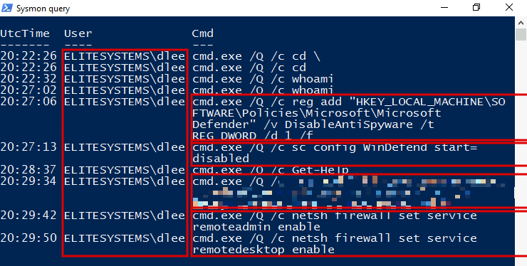
- Nhận định:
- Mẫu lệnh
cmd.exe /Q /c <lệnh> 1> \\127.0.0.1\ADMIN$\__<số>(phần sau1>đã được cắt bớt khi hiển thị) giống cách công cụ wmiexec của Impacket ghi kết quả lệnh ra shareADMIN$. - Thứ tự lệnh cho thấy kẻ tấn công tắt Microsoft Defender trước, sau đó bật RDP và mở firewall.
- Hướng giải: câu hỏi về lệnh bật RDP nằm ở dòng 20:29:34 đã làm mờ.
- Kiểm tra thêm:
dleeđăng nhập vào DC01 từ đâu? Lọc Security log của DC01, lấy các phiên đăng nhập thành công củadleecó IP nguồn, gom theo IP, kiểu đăng nhập và giao thức xác thực.
ev DC01 Security "*[System[EventID=4624]] and *[EventData[Data[@Name='TargetUserName']='dlee']]" 300 | %{ sx $_ } |
?{ $_.IpAddress -notin '-','::1','127.0.0.1' } | group IpAddress,LogonType,AuthenticationPackageName |
%{ $t = $_.Group.UtcTime | sort; [pscustomobject]@{ Count=$_.Count; Key=$_.Name; First=$t[0]; Last=$t[-1] } } | ft -auto
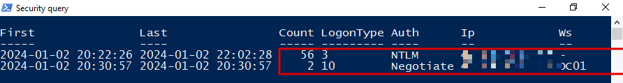
- Nhận định:
- Phiên đăng nhập mạng đầu tiên (20:22:26 UTC) trùng giây với lệnh WMI đầu tiên.
- Phiên RDP (20:30:57 UTC) diễn ra khoảng 1 phút sau khi RDP được bật (20:29:34 UTC).
- Kẻ tấn công dùng
dleetừ IP bên ngoài, không phải từ một máy trong mạng. - Chưa đủ dữ liệu để biết kẻ tấn công lấy thông tin đăng nhập của
dleebằng cách nào.- Sysmon của DC01 chỉ ghi nhận Sysmon64.exe truy cập
lsass.exe(Bước 7). - Cần thêm: Security log của DC01 có bật audit "Directory Service Access" để thấy yêu cầu replication (DCSync), và packet capture DRSUAPI tại DC.
- Sysmon của DC01 chỉ ghi nhận Sysmon64.exe truy cập
Bước 6: lateral movement bằng service qua ADMIN$
- Mục tiêu: kiểm tra service mới được cài trên các máy.
- Cách làm: đọc System log của 4 máy, lọc sự kiện cài service mới (service installed).
'DC01','FileServer','FIN-PC','IT-PC' | %{ $h=$_; ev $h System '*[System[EventID=7045]]' 9 | %{ sx $_ } |
select @{n='Host';e={$h}},UtcTime,ServiceName,ImagePath } | ft -wrap
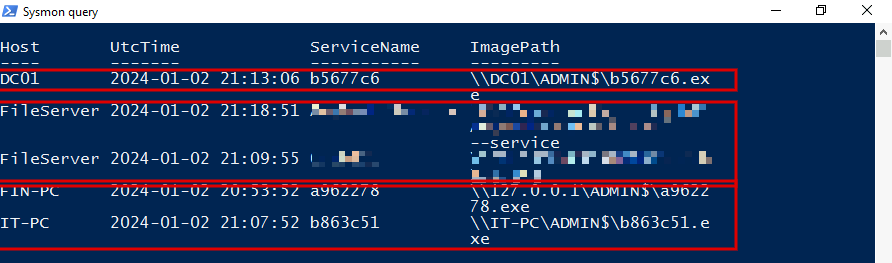
- Nhận định:
- Service tên ngẫu nhiên với file thực thi đặt thẳng trong
ADMIN$(tứcC:\Windows) là mẫu thực thi từ xa kiểu PsExec. Nhiều framework C2 dùng cách này để di chuyển ngang (lateral movement). - Thứ tự xuất hiện:
FIN-PC(20:53 UTC),IT-PC(21:07),FileServer(21:09),DC01(21:13).
Bước 7: truy cập LSASS và leo quyền
- Mục tiêu: tìm tiến trình đọc bộ nhớ
lsass.exe, nơi Windows giữ thông tin đăng nhập. - Cách làm: lọc sự kiện Sysmon truy cập tiến trình (process access) có đích là
lsass.exe, bỏ các tiến trình bảo mật và hệ thống thường gặp.
'FIN-PC','FileServer','DC01','IT-PC' | %{ sq $_ 10 TargetImage C:\Windows\system32\lsass.exe 400 |
?{$_.SourceImage -notmatch 'MsMpEng|svchost|wmiprvse|csrss|wininit|vmtoolsd|services'} | select -first 2 } |
ft Computer,UtcTime,SourceImage,GrantedAccess -wrap
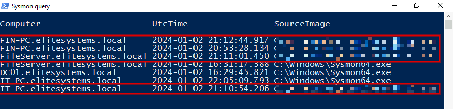
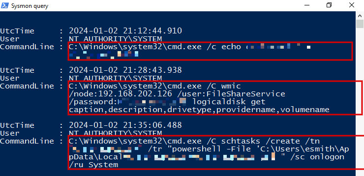
- Nhận định:
- Tiến trình truy cập
lsass.exetrên 3 máy trong vòng khoảng 20 phút. Thời điểm này trùng với lúc service lạ được cài (Bước 6). - Lệnh
echo <chuỗi> > \\.\pipe\<số>dưới quyền SYSTEM là mẫu leo quyền bằng named pipe impersonation, thường gặp ở lệnhgetsystemcủa các framework C2. - Tài khoản
FileShareServiceđược dùng với mật khẩu ghi rõ trong command line. Đây là bằng chứng thông tin đăng nhập của tài khoản này đã bị lộ. - Scheduled task chạy một script PowerShell trong
AppData\Localcủaesmithvới quyền System khi có người đăng nhập là cơ chế persistence. - Kiểm tra thêm trên USN Journal của FIN-PC: đọc
$Extend\$Jbằng MFTECmd, tìm bản ghi tạo file của các script liên quan.
& MFTECmd.exe -f "$A\FIN-PC\$Extend\$J" --csv c:\w --csvf finpc_j.csv
import-csv c:\w\finpc_j.csv | ?{ $_.Name -in 'ChromeUpdate.ps1','localdisk.ps1' -and $_.UpdateReasons -eq 'FileCreate' }
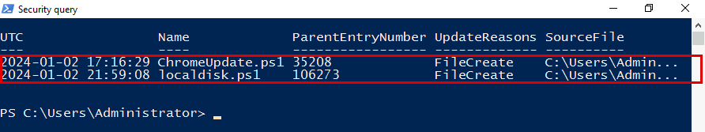
- Nhận định: script persistence được tạo khoảng 4 giờ trước khi scheduled task trỏ tới nó (21:35:06 UTC).
Bước 8: phần mềm điều khiển từ xa trên FileServer
- Cách làm: lấy sự kiện Sysmon tạo tiến trình trên FileServer, giữ các lệnh có CommandLine chứa
--set-password. XPath không hỗ trợ tìm chuỗi con, nên bước lọc này làm bằng PowerShell sau khi đọc log.
ev FileServer 'Microsoft-Windows-Sysmon%4Operational' '*[System[EventID=1]]' 5000 | %{ sx $_ } |
?{ $_.CommandLine -match '--set-password' } | fl UtcTime,User,ParentImage,CommandLine
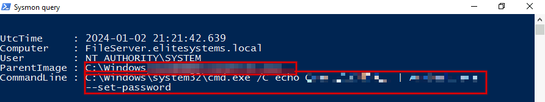
- Nhận định:
- Phần mềm điều khiển từ xa được cài dạng service, kèm mật khẩu truy cập cố định. Kẻ tấn công vẫn vào lại được kể cả khi C2 bị chặn.
Bước 9: script gom dữ liệu localdisk.ps1
- Mục tiêu: xác định dữ liệu bị nhắm tới.
- Cách làm:
- Tìm cùng một lệnh PowerShell mã hóa trên cả 4 máy, giải mã tham số Base64.
- Bản sao của script nằm trong
Users\Administrator\AppData\Local\Tempcủa từng máy trong bộ thu thập.
$ps = 'C:\Windows\System32\WindowsPowerShell\v1.0\powershell.exe'
'DC01','FileServer','FIN-PC','IT-PC' | %{ sq $_ 1 Image $ps 500 } | ?{ $_.CommandLine -match 'EncodedCommand' } |
select Computer,UtcTime,User,@{n='Decoded';e={[Text.Encoding]::Unicode.GetString([Convert]::FromBase64String(($_.CommandLine -split ' ')[-1]))}} |
?{ $_.Decoded -match 'localdisk' } | sort UtcTime | ft -auto
Get-Content "$A\FIN-PC\Users\Administrator\AppData\Local\Temp\localdisk.ps1"
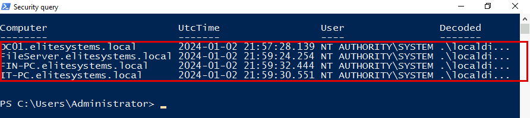
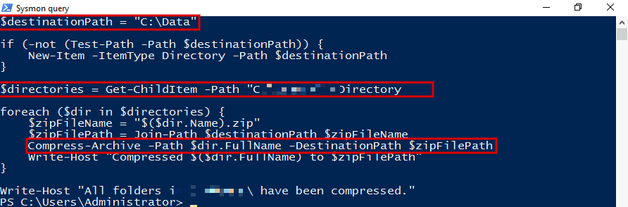
- Nhận định:
- Script gom và nén dữ liệu vào một chỗ (giai đoạn Collection), thường là bước chuẩn bị trước khi đưa dữ liệu ra ngoài.
- Chưa đủ dữ liệu để kết luận các file zip đã bị chuyển ra ngoài. Sysmon không ghi nhận kết nối mạng nào gắn với các file trong
C:\Data.
Dòng thời gian
- 02/01 11:11:37 UTC (18:11:37 UTC+7):
easygoing.exetrên FIN-PC kết nối tới IP C2 qua TCP/80. Nguồn: Sysmon FIN-PC. - 02/01 17:16:29 UTC (03/01 00:16:29 UTC+7): file
ChromeUpdate.ps1được tạo trên FIN-PC. Nguồn: USN Journal FIN-PC. - 02/01 19:50:32 UTC (03/01 02:50:32 UTC+7): PowerShell mã hóa recon Active Directory. Nguồn: Sysmon FIN-PC.
- 02/01 20:09:37 UTC (03:09:37 UTC+7): tải script qua
127.0.0.1:25816, chạyInvoke-ShareFinder. Nguồn: Sysmon FIN-PC. - 02/01 20:15:38 UTC (03:15:38 UTC+7):
ANONYMOUS LOGONđặt lại mật khẩuDC01$. Nguồn: Security DC01. - 02/01 20:22:26 đến 20:29:50 UTC (03:22 đến 03:29 UTC+7):
dleechạy lệnh qua WMI trên DC01, tắt Defender, bật RDP. Nguồn: Sysmon DC01. - 02/01 20:44:53 UTC (03:44:53 UTC+7):
easygoing.exechạy bằng tài khoảnFIN-PC\Administrator. Nguồn: Sysmon FIN-PC. - 02/01 20:53:52 đến 21:13:06 UTC (03:53 đến 04:13 UTC+7): service tên ngẫu nhiên qua
ADMIN$trên FIN-PC, IT-PC, FileServer, DC01. Nguồn: System log. - 02/01 21:10:54 đến 21:12:44 UTC (04:10 đến 04:12 UTC+7): truy cập
lsass.exetrên IT-PC, FileServer, FIN-PC. Nguồn: Sysmon. - 02/01 21:12:44 UTC (04:12:44 UTC+7): leo quyền qua named pipe trên FIN-PC. Nguồn: Sysmon FIN-PC.
- 02/01 21:18:51 và 21:21:42 UTC (04:18 và 04:21 UTC+7): cài và đặt mật khẩu phần mềm điều khiển từ xa trên FileServer. Nguồn: System và Sysmon FileServer.
- 02/01 21:28:43 UTC (04:28:43 UTC+7): WMIC từ FIN-PC tới FileServer bằng
FileShareService. Nguồn: Sysmon FIN-PC. - 02/01 21:35:06 UTC (04:35:06 UTC+7): tạo scheduled task persistence trên FIN-PC. Nguồn: Sysmon FIN-PC.
- 02/01 21:57 đến 21:59 UTC (04:57 đến 04:59 UTC+7): chạy
localdisk.ps1trên cả 4 máy. Nguồn: Sysmon, USN Journal.